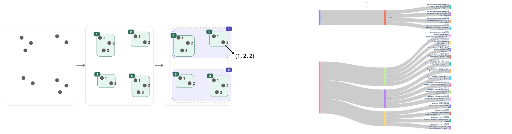
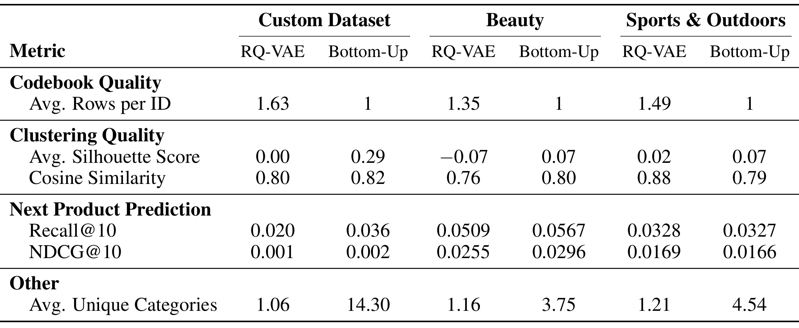

自底向上聚类构造语义 ID：唯一叶子、局部邻域与下游收益的边界
论文：Exploring Bottom-Up Clustering for Creating Semantic IDs
作者：Leah Woldemariam、Sudhanshu Garg、Taha Belkhouja、Charles Kim-Yip、Ali Sahami
机构：第一作者来自 Cornell Tech, Cornell University；合作作者来自 PayPal。
公开日期：2026-09-08，arXiv v1；记录日期：2026-09-11。
论文入口：arXiv:2609.08310
代码状态：未核验到本文独立公开代码或项目入口。本文依据完整六页 PDF，包括四页正文、一页参考文献和一页附录；PDF 使用 NeurIPS 2026 模板，不能仅凭模板确认主会录用。
这篇论文把生成式推荐的离散表示问题重新表述为层次聚类：先把相似物品组织成细粒度邻域，再将邻域向上归并成较粗的语义前缀。它最值得细读的地方是把物品唯一性与语义结构分别安排在叶子和前缀中，而实验也恰好说明两者都改善并不自动意味着所有推荐指标改善。
构造语义 ID 的主要挑战，是让每个标识符对应唯一商品，同时保留下游任务需要的信息。哈希或简单枚举能够保证唯一，却不能表达商品间的语义关系；已有方法依靠残差量化构造层次，并追加码字消除重复。因此，好的语义 ID 必须在区分每件商品与让语义相似商品拥有相近标识之间取得平衡。
1. 背景和问题
1.1 生成商品编号为什么会改变推荐模型的学习对象
传统的检索式推荐通常把用户状态和候选商品变成向量，再根据相似度形成候选集合。本文讨论的生成式检索则把商品表示为一串离散符号，让模型根据用户信息逐步生成这串符号。用户输入可以是之前交互过的商品，也可以是搜索查询；本文实际报告的下游任务是下一商品预测。两者不能混为一谈：引言借搜索说明生成检索的适用范围，实验并没有验证通用搜索问答。离散 ID 的构造是生成模型前面的表示接口，本文改造的重点就在这个接口，而非提出一种新的用户序列骨干网络。
当商品标识只是随机整数时，编号本身没有揭示商品之间的关系。两个用途接近、属性相似的商品可能具有完全无关的 ID；生成模型只有通过交互数据才能学会它们之间的联系。语义 ID 希望把这种联系部分预先写入编码，让相似商品共享若干码字。在本文采用的层次理解中，前面的码字表达比较粗的分组，后面的码字逐渐缩小候选集合，最终落到单件商品。这样，推荐模型生成前缀时可以在多个商品之间共享学习信号，而无须把每件商品完全作为孤立类别学习。引言把这种共享与新商品泛化联系起来，但这只是机制动机，是否改善冷启动还需要单独设置新商品测试。
这种接口的质量不能只由编码能否还原商品来判断。随机哈希也可以做到唯一查表，却没有为参数共享提供语义结构；反过来，所有同类商品共用一个短码可能非常容易预测，却无法确定最终应该返回哪个商品。本文明确把“可唯一解析”和“保留有用的局部邻域”并列为约束。因此，看到实验中的每 ID 平均商品数等于一时，必须继续问其前缀是否仍然组织了有意义的邻域，以及生成模型能否学会区分最后的叶子。唯一性是产品检索需要满足的基本条件，其本身不是推荐效果的充分证据。
1.2 残差量化、码本坍缩与碰撞是不同问题
论文把 RQ-VAE 和残差 K-Means 列为常见语义 ID 路线。前者学习一个连续表示，再以多级码本逐次逼近表示中的残差信息；码字序列由各层选择共同组成。作者将这种方式描述为从粗到细的层次，因为后级负责前级没有解释的细节。这种描述有助于理解对比动机，但不能把残差码字机械理解成互不交叉的严格语义类别树。本文的自底向上路线则直接从原始商品表示中的局部组出发，试图让树结构更直接地对应这些邻域。两者比较的是离散化组织方式，也包含了是否学习额外编码器的差异。
码本坍缩指某一级的大量商品集中在少数码字中，其余码字利用不足。碰撞指多个商品得到同一条完整语义编码，最终不能单凭该编码识别商品。两者可能同时出现，但不是同一个量：一级分布很偏并不必然让完整编码碰撞，而最后追加一个商品序号可以消除完整编码冲突，却不会自动使前面码本的使用分布更均衡。本文相关工作把码本利用和碰撞列为现有系统中反复遇到的问题，提出自己的方法时也强调这两点；不过实际结果表只报告了每 ID 平均行数，不能据此推导所有层的码本熵、空码率或负载平衡都得到了改善。
以追加码字去重为例，如果两个商品原本得到同一组语义码字，可以在末尾附加不同序号，让查表结果唯一。代价在于最后一位主要承担区分商品的职责，其数值大小通常不表达连续的语义距离。本文也对细簇中的商品做枚举，因此并没有消灭这一基本需求；它改变的是先形成哪些细簇、以及这些细簇如何组成上层前缀。其独特主张应理解为“让唯一叶子嵌在保留局部结构的树里”，而不能写成“通过聚类获得无需编号的天然语义唯一性”。后一种说法会掩盖真正完成去重的步骤，也会使对照实验的解释失真。
1.3 本文优先保护什么，仍然可能损失什么
作者担心从全局划分开始时，早期边界会把相邻商品分到不同大组中，后续即使继续细化，也难以恢复它们共享前缀的关系。自底向上先把附近的点聚在一起，再将这些组向上归并，目标是让最近邻关系在树结构中更容易被保留下来。对推荐模型而言，这意味着两个语义近邻不仅在连续空间里接近，而且可能共享靠近叶子的较长编码前缀。作者尤其强调倒数第二层，因为最后一层已经是一商品一编号；真正有共享意义的最细分组位于叶子之上。
但是，局部表示来自预训练商品编码器，不能天然等同于用户偏好相似。标题、品牌、商品属性和图像描述形成的向量，可能很好地反映内容相似，却未必涵盖价格敏感度、场景替代关系或交互中的互补关系。这是本文假设需要面对的边界，而不是本文验证过的具体失败案例。实验中 Sports 数据集在某些聚类指标变好时下一商品预测反而略降，提供了一个更直接的提醒：即使只讨论公开测试，也已经不能把“保留原始向量结构”写成“普遍保留下游最需要的信息”。局部结构的任务价值需要通过检索指标检验。
这篇工作因此同时关联推荐系统和大模型。对推荐而言，它研究的是商品词表如何组织，以及新增商品如何进入已有词表；对大模型而言，它讨论连续预训练表示如何变成可生成的离散对象。可以把这一问题迁移到文档生成检索或个性化对象引用上思考，但本文没有给出 RAG、Agent 或长上下文的实验。阅读时应抓住最小可验证主张：在给定商品表示和下一商品预测设置下，更换层次化 ID 构造方法是否改善编码性质及推荐结果。只有这条链路被证据支持，才适合继续讨论更广泛的应用。
2. 方法
2.1 细粒度聚类与叶子编号
输入是已经编码好的商品向量。正文说明，每个商品的文本属性一起输入预训练 Transformer，得到一个向量；实验进一步写明使用 Qwen 模型编码拼接文本。论文没有给出完整的编码器型号和训练配方，因此不能把它描述为本文联合训练的新表示模型。原文方法部分给出的基本对象是：
符号解释：$X$ 是包含全部 $N$ 件商品的矩阵，$d$ 是单件商品表示的维度，$x_i$ 是第 $i$ 件商品的向量；$g_i^{(\ell)}$ 是该商品在第 $\ell$ 层的离散标签，$L$ 是编码长度，整条标签元组构成该商品的语义 ID。这是原文未编号的结构定义，并非新训练损失。标签首先表示属于哪个组，其整数差值本身不提供距离意义；有意义的是共享哪几级组以及共享多长前缀。
程序先在原始商品表示上得到最细的共享簇。附录 Algorithm 1 第一行写为：
符号解释：$\operatorname{MiniBatchKMeans}$ 是附录写出的细聚类操作，$k_1$ 是该步骤的目标簇数，$g^{(L-1)}$ 保存每件商品被分配到的细簇标签。这里照录附录的下标体系，不把它解释成已经与全文一致的层号定义。正文提到数据可按块输入，并说超过容量的细簇应继续分裂；附录则在递归粗化阶段出现可选容量约束，两处具体执行时机存在差异。实际复现要先确认这部分，而不能默认任何一种实现都与报告结果等价。
随后，对每个细簇内部商品从零开始分配互不重复的序号，作为最后一级 $g^{(L)}$。唯一性来自“细簇身份加簇内编号”这一组合：同簇商品的叶子序号不同，不同簇商品即使都编号为零，也仍可由前面的簇标签区分。这要求父子标签映射和重标号过程保留细簇身份，完整元组才能维持唯一。末位序号不需要把语义相似商品编成数值相近的整数，论文也没有给出这样的排序规则。因此最后一级负责身份识别，前面的共享层才承担语义组织；把这两层职责分开，是理解随后评估为何停在倒数第二层的前提。
2.2 加权质心逐层粗化
细簇形成之后，算法不再每一步都把所有商品当成独立待聚对象，而是先计算每个组的代表向量和商品数量。原文 Algorithm 1 的第二行与第十二行使用相同操作：
符号解释：$C$ 表示当前各簇的质心集合，$w$ 表示对应簇包含的商品数量，$g^{(\ell)}$ 是当前层标签，$\operatorname{GroupCentroids}$ 根据原始商品和分组求代表点及计数。这一式子保留原伪代码的操作定义；论文没有展开其实现细节。人数权重使一个包含大量商品的组在上层操作中保留相应质量，避免把大小悬殊的组都简单当成同等数量的商品。权重表达的是簇大小，原文没有说它代表点击量、销量或用户价值。
在归并时，把当前代表点组成更粗的组，然后把新父标签传播回原始商品，重新得到质心与权重，再继续向树根移动。保留细簇身份、只在其上建立更粗的共同祖先，是整条路线希望保护局部关系的关键。Figure 1 把这种方向性画得很明确，先出现的绿色邻域仍然存在，后面新增的紫色组覆盖多个绿色邻域，而不是从紫色大区重新任意划分所有商品。

Figure 1 左侧从未聚类的散点开始，灰色点代表商品表示。中间面板把附近点组织成四个绿色细组，同时在每组内编号；右侧面板把上方两个细组放入紫色组一，下方两个细组放入紫色组二。箭头标出的编码 $(1,2,2)$ 可以按从粗到细阅读：它先属于上层组一，再属于细组二，最后落到这个细组内编号为二的商品。图中的组编号和商品编号都只是离散标签；把第二个商品编号成二，并不意味着它与编号为一商品的向量距离一定小于与编号为三商品的距离。局部关系是通过共同的绿色包围区域保存的，不能从标签数值做算术推断。
图右侧是若干真实商品名称与编码分组的流向示例，展示药品、护肤等商品怎样沿前缀组织成不同分支。灰色连接带让读者看到共享上层前缀之后还会分到不同下层组，最后到达具体商品。该部分用于说明可解释的层次路径，原文没有把带宽定义为点击量或推荐概率，不能把它当成流量分配实验。整张图没有距离保真误差、簇纯度或用户行为轴，因此它证明的是算法结构与编码读取方式，不是证明所有近邻都被保留。要判断局部结构到底保留多少，需要转到实验表的轮廓系数和余弦相似度；要判断这些结构是否有用，还要继续看下一商品预测。图中过程也没有体现容量溢出时的分裂细节，所以不能用这个理想示意替代附录实现核对。
主文与附录对上层操作的描述并不一致。正文明确说以商品数为权重使用 Agglomerative Clustering；然而附录 Algorithm 1 第八行写的是：
符号解释：这里 $C$ 和 $w$ 是当前代表点及其权重，$k_\ell$ 是该次粗化的目标簇数，$g^{(\ell+1)}$ 是下一层标签；附录的 $\mathrm{parent}$ 参数表达向原始商品传播层次关系的意图，并没有给出标准库函数实现。该式保留作者原写法，不表示任意 MiniBatchKMeans 接口都支持这个参数。对读者而言，凝聚聚类逐次合并和重新对质心运行 K-Means 是不同的具体算法，不能在实现中悄悄替换后声称精确复现。附录还把粗化计划写为严格递减的 $[k_1,\ldots,k_L]$，但循环按层号从 $L-2$ 向一移动，第一步细聚类又直接取 $k_1$，计划索引与层索引的映射需要作者澄清。
原算法返回行重复写了两个 $g^{(1)}$，而开头保证部分写的是从第一层到第 $L$ 层的标签元组；本笔记采用前面的结构定义讲解 ID，不把重复返回项静默修成一个“已验证实现”。另外，主文用 $K$ 指细簇容量，而附录用 $K$ 指聚类计划，用 $c_{\max}$ 指可选容量上限。它们语义不同。若在粗化后直接分裂过大的上层组，还需保证没有破坏原有细簇的父子关系，否则局部关系保留与唯一性论证都需要重新检查。论文只给出操作名称，没有证明这类约束如何共同满足。
2.3 新物品最近邻接入
对于新物品，作者提出先在原有商品中找到最近邻，继承它的前 $L-1$ 位码字，再在选定簇内分配新的末位编号。这样已有前缀可以继续使用，新商品在编码层面接入已有语义邻域；正文还提到可使用多个近邻提高分配稳健性，并在簇超出阈值时分裂。论文没有写多近邻如何投票、冲突如何解决，也没有给出新末位编号超出词表时的具体处理。这里应把已描述的单近邻接入流程与尚未指定的扩展区分开。
这一路径避免每来一个商品就从头构建整个表示空间的意图很清楚，但“可以分配新 ID”与“生成模型能可靠生成这个新 ID”是两个阶段。若最后一级出现此前未训练过的标签，解码词表如何扩充、参数怎样初始化、历史序列如何保持兼容，都属于下游模型接口问题。原文没有报告在线更新、真实冷启动或 ID 版本迁移实验，因此不能把该段写成已有线上服务能力。本文也没有可复用的端到端新训练损失或复杂度定理；核心是上述聚类与标签传播操作，生成推荐模型的优化细节公开程度有限。
3. 实验结果
3.1 数据、对照设置与指标口径
实验使用 Amazon Product Reviews 的 Beauty 和 Sports & Outdoors 子集，以及一个约六百万商品的自定义数据集。结果表 caption 用“5.8M Item dataset”称呼后者，正文则近似写六百万，两者应当视为同一自定义集合的粗细表达，不应凭此另造两个实验。自定义商品包含标题、图像的模型生成描述、类别和品牌等信息；作者将可用文本拼接，经 Qwen 模型形成表示。这里虽然利用了图像描述，公开流程的聚类输入仍是文本编码后的商品向量，不能推导其训练了一个新的视觉语言模型，也不能断言三套数据使用了完全相同的全部属性字段。
主要对照只有 RQ-VAE。作者表示在批量大小、学习率、权重衰减、码本模式、码本大小、码本数量和 VAE 隐层维度等方面做过搜索，最后采用每个码本大小为二百五十六、共三个码本的配置，并追加一个码字完成去重。报告这项搜索可以说明作者尝试调优基线，但搜索范围、预算、验证集选择和每组搜索结果没有完整展开，因此不能认定两种方法已经在相同计算预算下达到各自最优。残差 K-Means 在相关工作里被提到，却没有作为本表的独立实测对照，不能把本表结论扩展为优于所有残差量化方法。
附录写明，自定义数据上自底向上方法在倒数第二层和倒数第三层分别使用二千和六十四个簇；Amazon 数据的码本大小则与 RQ-VAE 对齐。即便某个层的取值数量相同，也还需要确认完整路径容量、实际使用簇数以及是否统计末位去重码，才能严格比较。特别是在自定义数据上，作者自己用两种方法簇数量不同解释类别数量差异，这意味着主实验不是一个只改变归并方向、其余一切严格固定的消融。实验适合回答这套具体方案与选定 RQ-VAE 配置的表现如何，不能仅凭数值把差异全部归因于自底向上的局部性。
表中指标分为四组。每 ID 平均行数反映一个编码对应多少商品；轮廓系数考察组内与组间的相对关系；余弦相似度描述嵌入方向上的相似程度；Recall@10 与 NDCG@10 则评价下一商品预测的前十结果。平均独特类别数统计一个簇里包含多少种类别，作者在指标定义中说越少意味着更高语义一致性。对于自底向上方法，聚类质量统计到前 $L-1$ 位定义的细组，因为末位总是一商品一叶子。若改为单商品叶子计算组内语义一致性，会得到没有实际共享意义的极端结果，所以这一评估层级是合理且必须保留的说明。
但还有一处重要口径缺口：RQ-VAE 实现段说已追加末位去重码，结果表的每 ID 平均行数仍分别大于一。可能是统计语义部分的碰撞而下游另用去重码，但论文没有把这两个阶段讲清楚。因此可准确记录表中数值，不能同时声称“基线最终检索 ID 仍然有碰撞”而忽略实现段。本表没有给出码本利用率分布、各层占用直方图或熵指标，仅凭每 ID 平均行数无法完整评估码本坍缩，尤其不能证明它消除了所有层的负载不均。
3.2 主结果与反例

Table 1 的三组列分别对应自定义数据、Beauty 和 Sports & Outdoors，每组内先列 RQ-VAE，再列 Bottom-Up。读表时应先在同一数据集的同一行比较，不能把不同数据集的数值横向当成同一任务难度。第一组每 ID 平均行数由一点六三、一点三五、一点四九分别变为一，符合末位枚举后每个完整编码唯一的构造目标。第二组轮廓系数在三个数据集均上升，自定义数据从零到零点二九，Beauty 从负零点零七到零点零七，Sports 从零点零二到零点零七。这支持在作者采用的细簇口径下，分组相对分离度有所改善；但由于簇数和分组机制变化，不能把它直接解释为等容量表示的全面保真提升。
余弦相似度表现有明显分化：自定义数据从零点八零到零点八二，Beauty 从零点七六到零点八零，而 Sports 从零点八八下降到零点七九。轮廓系数和余弦度量不是同一对象，一个提升并不要求另一个同向变化。表中最后一组类别数也全部上升：自定义数据从一点零六到十四点三零，Beauty 从一点一六到三点七五，Sports 从一点二一到四点五四。按作者自己“类别越少越一致”的定义，这一指标并未变好。作者认为簇数较少带来更大的类别覆盖，但这只能说明比较口径影响结果，不能把类别更多重新包装成语义更纯，也不能把它当成推荐多样性已提升的证据。
下游预测的前两套数据确实改善：自定义数据 Recall@10 从 0.020 到 0.036，NDCG@10 从 0.001 到 0.002；Beauty 分别从 0.0509 到 0.0567、从 0.0255 到 0.0296。Sports 则分别从 0.0328 到 0.0327、从 0.0169 到 0.0166，两个指标都小幅下降。表格支持“两个数据集获得提升，第三个略有回落”，不支持“所有数据集均改善下游推荐”。正文 Results 中更概括的提升表述需要被这组反例限定。整个表缺少误差条、多随机种子与显著性检验，因此不能断言很小的正负变化一定稳定，也不能反过来擅自把下降视为噪声并忽略。
若以表中四舍五入后的原始值计算，自定义数据 Recall@10 相对提升约百分之八十，NDCG@10 约翻倍；Beauty 的相对提升约为百分之十一点四和百分之十六点一。相对数容易显得很大，因此必须同时保留绝对变化：前者分别增加零点零一六和零点零零一，后者分别增加零点零零五八和零点零零四一。这里的百分比是对论文已报告数值做的算术换算，不是作者另提供的一组测量。尤其自定义数据的 NDCG 只保留三位小数，计算“翻倍”对舍入敏感，不能据此声称精确的一百个百分点提升。
Sports 的 Recall@10 绝对下降零点零零零一，NDCG@10 下降零点零零零三；按表值换算，相对变化约为负百分之零点三和负百分之一点八。这些幅度小于另两套数据的提升幅度，但它们在逻辑上十分关键：同一数据集轮廓系数上升而推荐指标没有上升，已经足以说明“几何分组更分离”不是“下游表现一定更好”的充分条件。原文没有给出导致 Sports 差异的类别结构分析、用户行为切片或错误案例，因此不能进一步断言运动商品的特殊消费周期就是原因。
3.3 能归因到什么，尚缺哪些实验
现有证据最稳妥地分成三层。构造层面，细簇加叶子编号确实提供唯一元组的直接机制，属于方法本身的性质。表示层面，三个数据集的轮廓系数变好，但余弦相似度只有两套数据改善，类别一致性指标则全部向更混杂方向变化。任务层面，两个数据集的下一商品预测改善，另一个略退。若把三个层面合并为一句“高质量唯一语义 ID 带来普遍更优推荐”，会同时丢掉指标分歧和数据集反例。本文的探索价值在于给出一种值得比较的离散化路线，而不是已经建立结构保真到任务收益的普遍定理。
最关键的消融缺口是没有固定细簇数、树深、叶子去重和下游模型，只单独比较从粗到细与从细到粗。也没有去掉人数权重、替换初始细聚类、控制容量阈值或改变最近邻分配的实测结果。因此，自定义数据较大的收益可能与局部结构保护有关，但也可能受到实际分组粒度和编码空间的影响；这里是待检验的归因问题，而不是能够从一张表中做出的因果结论。若要判断人数权重是否必要，必须拿同样细簇在加权和不加权上层操作下对照，现有论文没有这条证据。
效率方面，正文说原始向量按块处理，上层用质心代表商品，这提示可能减少某些步骤直接处理的数据量。然而没有训练用时、索引构建时延、峰值内存、增量插入成本或在线生成延迟。尤其主文与附录使用不同聚类算子，计算成本不能凭方法名称推导成一个确定结论。六百万商品规模只说明作者在这个规模的数据上报告了实验，不等价于证明满足线上延迟要求，也不能作为优于 RQ-VAE 训练效率的证据。本文未提供可核验的严格复杂度界，笔记不为其补写。
鲁棒性和冷启动方面，新物品最近邻分配只出现在方法描述，没有按上线时间切分的新商品集合，也没有长尾商品、稀疏交互用户、嵌入噪声或目录扩张的评测。训练集和测试集划分细节、预测模型结构、候选约束方式和训练超参数也不够完整。这些缺口使得“改用本文 SID 后，序列模型在同样条件下稳定改善”的复现仍有工作量。既然论文把让预训练表示更可用于下游决策作为主题，下一步最有说服力的证据应当是控制表示与解码器后的迁移实验，而不是继续只增加几何指标。
类别结果还涉及一个具体解释边界。每簇独特类别数随簇内商品数量增长通常有更多机会变大；在不同簇数条件下，这个统计量同时受到分组大小和类别混合的影响。作者用更少的簇解释更高的类别数，在方向上能够理解，但没有提供簇大小分布或按大小归一的比较。因此，既不能仅凭类别数否定所有语义共享，也不能以“符合预期”为由把这项负向指标消去。更合适的读法是承认当前配置牺牲了按商品分类标签衡量的局部一致性，而这种牺牲是否换来更有用的偏好共享，需要下游和类别切片共同说明。
4. 总结
4.1 我的判断
这篇工作的贡献是一个清楚的表示设计选择：从细粒度商品邻域向上组织语义前缀，让叶子编号负责唯一性，让共享簇负责语义关联。对已有 RQ-VAE 生成推荐系统而言，这提供了一个不必完全依赖残差量化层次的比较对象。它也提醒我们，商品 ID 不是无关紧要的数据库字段，而是会影响生成模型共享哪些统计信息的接口。值得保留的是这个研究问题和操作方向；结果仍属于探索性证据，不能把它作为全面替换 RQ-VAE 的成熟结论。
我对实验最关心的信号是三类指标没有完全同向。自定义数据与 Beauty 的收益使这条路线值得复现，Sports 的回落则要求研究者解释何种商品内容结构适合这种分组。类别数量的明显上升表明“语义”并非只有一种定义：预训练向量近邻、分类标签一致与用户下一步选择之间可能不重合。本文没有解决这些定义之间的冲突，但把这种冲突放到了一个可比较的 ID 构造问题上。下一轮研究应该明确目标保留哪一种关系，而不是继续用单一“语义质量”涵盖全部现象。
4.2 工程启发与复现顺序
首先应索取或等待作者公开可执行算法，核对主文凝聚聚类与附录 MiniBatchKMeans 的真实使用方式，确认粗化计划、层号、父标签传播和容量分裂的含义。这个步骤直接决定能否复现论文中的树，而不仅是代码风格差异。若需要自行实现，应明确标注采用哪一个版本，并分别运行两个版本；不能把自己选择的合理修正当成原作者实现。
其次，应先固定商品嵌入和下一商品预测模型，建立一个等树深、等目标簇数、同样末位去重方式的对照。记录每层实际使用的编码数、簇大小分布和完整元组碰撞，再同时测量轮廓系数、余弦相似度和检索指标。这样才能判断变化是来自局部组织方式还是编码容量。对于现有线上系统，更实用的第一步是离线对同一商品目录建立影子索引，观察热点前缀、长尾商品和解码候选分布，而不是立即迁移线上 ID。
最后，单独验证新增商品流程。要按时间截断旧商品目录，把之后出现的商品只通过最近邻继承前缀接入，再测新商品召回、旧商品指标变化、编号容量和重建成本。这些是对作者冷启动主张最直接的跟进；同时要记录簇分裂是否改变已有商品 ID。如果分裂必须重写历史序列或重新训练部分词表，其收益和维护成本就需要一并衡量。本文没有提供这些测量，因此这里属于后续实验建议。
4.3 局限与后续跟进
第一，算法规范存在内部不一致：上层算子、索引计划、重复返回标签及容量检查位置都需澄清，否则可执行实现与论文描述可能并非同一个对象。第二，唯一性依赖枚举，前缀的语义碰撞和各层码本利用仍要分别测量；现有平均行数无法覆盖它们。第三，对照簇数与容量不完全统一，削弱了把收益单独归因于自底向上方向的力度。第四，Sports 的下游回落和余弦下降限制了普遍有效的表述，缺少多种子结果又使小差异稳定性未定。第五，公开实验没有增量服务、真实冷启动与计算成本数据，线上可用性仍待验证。
后续最优先跟进作者代码或修订版，因为它可以消除算法复现中最大的分叉；其次跟进控制簇数与叶子编码的消融，因为它决定这条路线相对于残差量化的独立价值；再跟进 Sports 及新增商品切片，因为这两处最直接挑战“更好的局部结构带来更好的检索”这一中心假设。对大模型应用的迁移也应从相同原则开始：如果用这种 ID 指向文档或记忆对象，必须分别验证对象唯一解析、语义前缀共享与最终任务效果。本文给出了一个有用的设计入口，但三者的关联仍需要逐项实证建立。